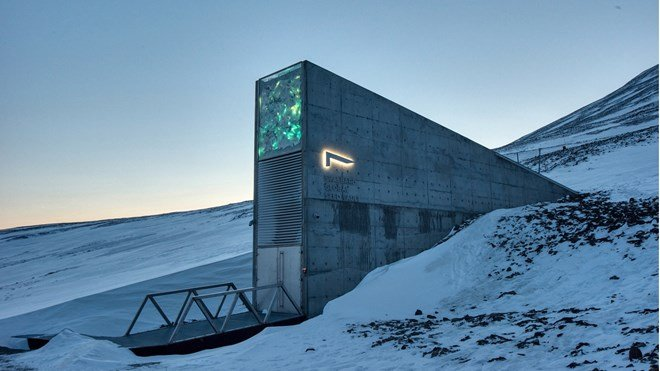

Name of fictitious company: GEAM
Address: 10401 NE 4th St Floor 14, Bellevue, WA 98004, United States
Contact phone: 212 479 7990
Email address: GEAM@NOTSTEAM.com
Directors of Business: Kyle Simpson, Stefan Eric Machado
Key employees: Brad Pitt (Financial Manager) , Palpatine (Supreme Commander of Customer Complaints)
Digital distribution store supported by ^`^xThe superstitious company ^`^y. Created for the purpose of letting gamers play games. Was founded by the saviours Kyle
To provide gamers of all ages with violent easy access morally incorrect gaming experiences to all points of the globe via an eco-friendly route of digital games.
for every game we sell we send a copy to Antarctica)
Ran by Kids in Antarctic (KIA)
10% of profits made are sent to antarctic in the form of gift cards to help the kids game
In charge of listing every type of game mankind has created
We provide a digital marketplace for the buying of games. We can either provide a customer with a digital or a physical copy of their purchase, (Perhaps we allow us$
Strive to present an online community of wealthy buyers of this product. Our products reach all corners of the world listing the rarest items on the planet.
We offer users 24/7 access to both our marketplace and their video game libraries anywhere around the world with a suitable internet connection.